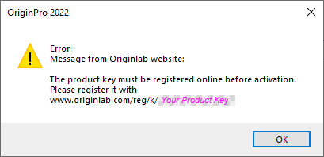

FAQ-1115 Was sollte ich tun, wenn ich den Fehler "Der Produktschlüssel muss vor der Aktivierung online registriert werden." beim Aktivieren der Lizenz angezeigt bekomme?
Reg-ProductKey-Before-Activation
Letztes Update: 19.12.2021
Wenn Sie einen Produktschlüssel direkt vom Origin-Administrator Ihrere Organisation haben und ihn in Origins Dialog Lizenzaktivierung eingegeben haben, wird Ihnen möglicherweise die folgende Fehlermeldung angezeigt:
- The product key must be registered online before activation.
- 
- Öffnen Sie den Webbrowser auf der Seite
www.originlab.com/reg/k/<YourProductKey>.
- Melden Sie sich an Ihrem OriginLab-Webkonto an. Sollten Sie noch kein Konto haben, richten Sie sich bitte eines ein.
- Klicken Sie nach der Anmeldung auf die Schaltfläche Registrieren hinter Ihrem Produktschlüssel.
- Der Produktschlüssel wird jetzt in Ihrem Konto registriert. Verwenden Sie ihn, um Ihr Origin erneut zu aktivieren.
Schlüsselwörter:Registrierungsschlüssel, Node-locked, Gruppenpaket, Lizenz aktivieren